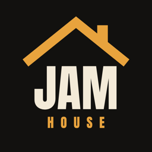

Jam House は、ピアノ・ベース・ドラム・サックスのバンドと一緒に、ひとりでジャムセッションを楽しめるアプリです。曲を選んで PLAY を押すと、テーマの打ち合わせ、カウント、ソロの回し、キメ、エンディングまで、本物のセッションの流れで演奏が進みます。
不具合やご要望は、お問い合わせフォームからご連絡ください。
Jam House lets you enjoy a jazz jam session on your own with a band of piano, bass, drums and sax. Pick a tune and press PLAY — the head arrangement, count-off, trading solos, hits and endings all flow like a real session.
For bug reports or requests, please use our contact form.